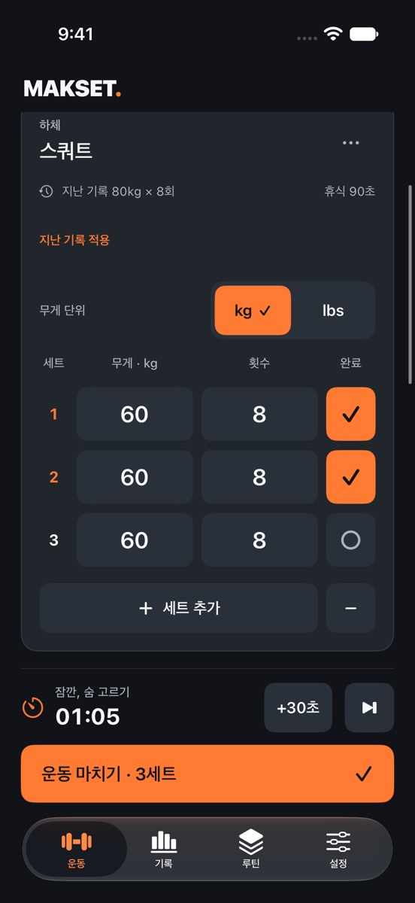
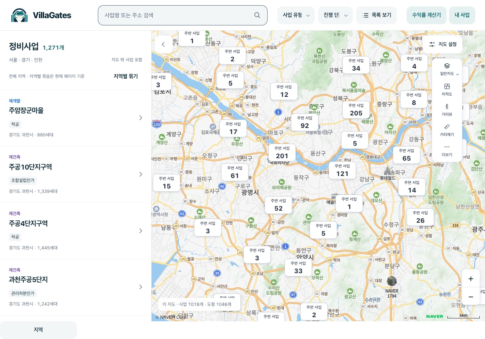

개인 프로젝트 · iOS 및 웹
스시자로 SushiJaro


개인 프로젝트 · iOS 및 웹
개인 프로젝트 · iPhone 및 Apple Watch

세트별 중량과 횟수, 휴식 시간을 기록하는 근력 운동 일지입니다. 이전 운동과 볼륨을 비교하고 Apple Watch에서 세트를 완료할 수 있습니다. 광고나 가입 없이 무료로 기록할 수 있습니다.
개인 프로젝트 · 공간정보 웹앱

서울·경기·인천의 정비사업을 지도에서 살펴보는 서비스입니다. 공개 사업 자료와 부동산 실거래, 정책, 지역 뉴스를 사업별로 모아 볼 수 있습니다.
Next.js · FastAPI · PostgreSQL/PostGIS · Python
2023.05 – 현재
대한민국 서울
2022.08 – 2023.01
미국 캘리포니아주 어바인
2022.07 – 2022.08
대한민국 서산
전기차 배터리 생산 현장에서 근무하며 제조와 품질관리 실무를 경험했습니다.
2022.01 – 2022.05
미국 버지니아주 블랙스버그
CS3754 클라우드 소프트웨어 개발 수업에서 MEAN 스택과 Java EE를 실습하는 학생 50여 명을 지도했습니다.
2015.09 – 2017.05
대한민국 파주 비무장지대
2019.08 – 2022.05
컴퓨터과학 학사 · 우등 졸업(Magna Cum Laude)
학점 3.72/4.0 · 미국 버지니아주 블랙스버그
2018.05 – 2019.05
학점 3.92/4.0
Virginia Tech으로 편입
서울 에릭슨에서 C++로 5G 패킷 코어의 SMF·PGW 제어 평면을 개발합니다. 3GPP 표준 기능을 구현하고 4G·5G 시그널링 흐름을 검증합니다.